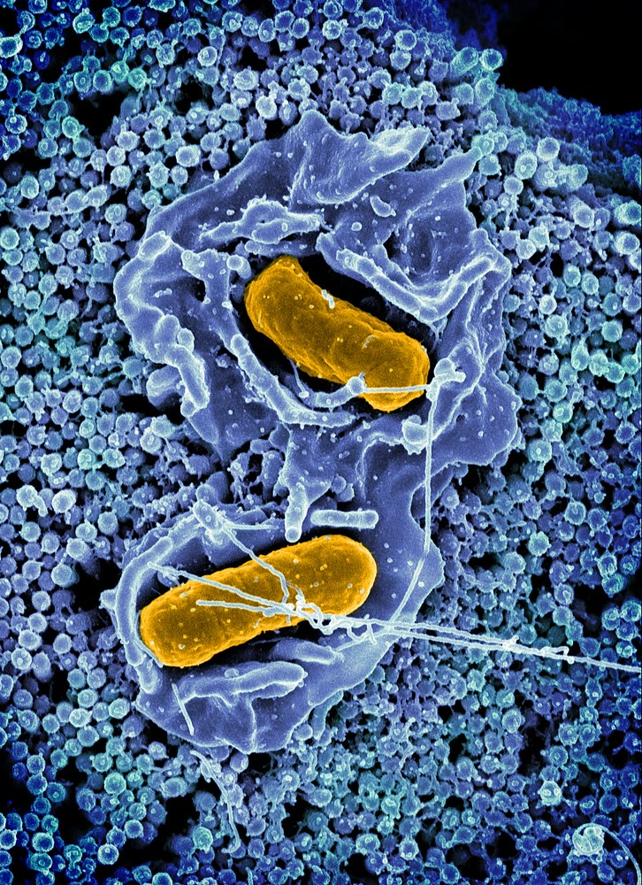

살모넬라증 (Salmonellosis)

쉽게 풀면
오염된 음식이나 물을 통해 동물과 사람 모두에게 설사와 열을 일으키는 흔한 식중독균이다. 닭이나 파충류를 만진 뒤 손을 잘 씻지 않으면 사람도 옮을 수 있다.
왜 중요한가
살모넬라증은 오염된 사료나 물을 통해 축군 전체로 빠르게 확산될 수 있어, 농장 방역과 축산물 안전관리 양쪽에서 핵심 감시 대상으로 다뤄진다. 무증상 보균 동물이 지속적으로 균을 배출할 수 있다는 점이 식품 안전관리 기준 설계에서 중요하게 고려되며, 이 때문에 살모넬라검사가 도축·가공 단계에서 정기적으로 시행된다. 항생제 내성 살모넬라의 출현도 공중보건 연구의 주요 관심사이다. 거북이나 이구아나 같은 파충류 반려동물은 무증상 보균율이 높아, 특히 어린이 보호자를 대상으로 한 손씻기 교육이 예방 정책에서 강조된다.
어떤 상태인가
살모넬라속 세균에 감염되어 생기는 질환이다. 대표적인 식중독이며 설사, 발열, 경련성 복통, 구토가 나타난다. 노출 후 12~72시간 안에 증상이 시작된다.
감염원은 오염된 고기·달걀·물·우유, 분변에 오염된 식품, 고양이·개·파충류 같은 반려동물, 위생이 나쁜 주방, 제대로 해동하지 않은 가금류 등이다.
진단과 평가
증상은 설사, 발열, 복통, 구토로 다른 장염과 겹치므로, 노출 후 12~72시간이라는 발병 시점과 최근에 먹은 음식, 동물 접촉 여부를 함께 살핀다.
2015년 전 세계 사망은 비장티푸스성 살모넬라증이 90,300명, 장티푸스성이 178,000명이었다.
연구에서 다루는 방식
- 비장티푸스성과 장티푸스성을 구분해 보고한다.
- 환자 수나 사망 수를 인용할 때는 집계 연도와 출처를 적는다. 출처마다 수치가 다를 수 있다.
- 감염원별로 식품, 물, 반려동물, 조리 위생 같은 전파 경로를 나누어 분석한다.
논문에서는 이렇게 쓰입니다
실제 논문에서
국내 학술지 논문에서 이 용어가 쓰인 문장을 그대로 옮겼다. 제목·학술지·연도와 원문 링크를 함께 적었다.
“살모넬라증 환아의 연도별, 계절별 발생 례를 분석하고 임상양상과 검사실 소견을 분석하고자 하였다.”
대전지역 살모넬라증 환아에 대한 임상적 연구(1994∼1999년), Pediatric Infection and Vaccine, 2000 · KCI 한국학술지인용색인 · 원문 보기 ↗
“이에 본 연구에서는 최근 12년간 살모넬라증 환자의 임상적 양상과배지에서 동정된 살모넬라 균주의 변화, 항생제 내성을연구하기로 하였다.”
최근 12년간 발생한 살모넬라증 환아의 임상적 특성: 단일기관 연구, Pediatric Infection and Vaccine, 2013 · KCI 한국학술지인용색인 · 원문 보기 ↗
예시 문장
아래 예문은 용어의 쓰임을 보이려고 만든 것으로, 실제 논문 문장이 아니다.
장염 원인균 감별을 위한 표준 세균 분리동정 과정을 설명하는 문맥에서 사용된다.
이 문장은 앞의 예문이 임상 검체에서 균을 분리동정하는 기초 절차를 다뤘다면, 이 예문은 항생제 내성균이 퍼지는 경로를 추적하는 역학적 연구를 다룬다.
조금 더 깊게 보면
임상 증상이 없는 보균 동물도 균을 배출할 수 있어, 증상 유무만으로 감염 여부를 판단하기는 어렵다. 혈청형에 따라 숙주 범위와 병원성이 크게 달라 모든 살모넬라균을 하나의 위험도로 묶어 말하기는 부정확하다. 사람 감염은 오염된 축산물 섭취뿐 아니라 감염 동물과의 직접 접촉으로도 일어날 수 있어, 식품 위생과 사육 위생 두 측면 모두에서 관리가 필요하다. 살모넬라균은 혈청형에 따라 특정 숙주에만 감염되는 숙주특이형과, 여러 동물종과 사람에 두루 감염되는 광범위숙주형으로 나뉘어 공중보건상 위험도 평가가 달라진다.
주의할 점
무증상 보균 동물이 균을 지속적으로 배출할 수 있어 축사 내 교차감염 관리가 중요하다. 달걀 껍데기 오염뿐 아니라 산란 전 난소 감염을 통해 알 내부까지 오염될 수 있어, 껍데기 세척만으로는 완전한 예방이 되지 않는다는 점이 알려져 있다. 일부 혈청형은 사람에서 장염을 넘어 혈류 감염(패혈증)으로 진행할 수 있어, 영유아나 면역저하자에서는 특히 중증화 여부를 주의 깊게 살펴야 한다.
참고 문헌
- Wikipedia contributors. (n.d.). Salmonellosis. Wikipedia.
- 위키백과 기여자. (n.d.). 살모넬라증. 위키백과.